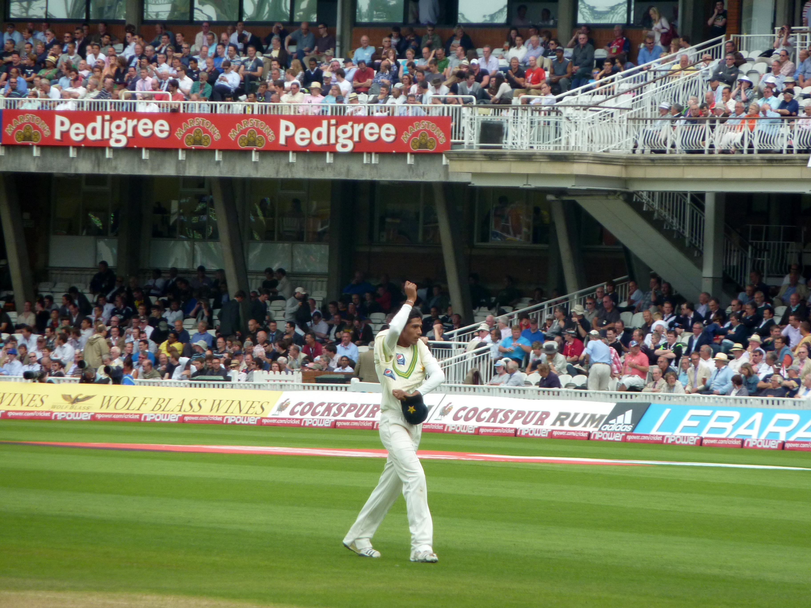

The Pattern That Refuses to Die
If you're an Indian cricket fan, the trauma is deeply ingrained. You see a tall fast bowler with the ball in his left hand, marking his run-up on the morning of a crucial knockout game, and your stomach immediately drops. You know what's coming.
Mohammad Amir in the 2017 Champions Trophy Final. Trent Boult in the 2019 World Cup Semi-Final. Shaheen Afridi in the 2021 T20 World Cup. Mitchell Starc basically every time he sees an Indian opening pair. Reece Topley. Marco Jansen.
It's not a coincidence. It's not bad luck. It's a decade-long technical vulnerability that the most talented batting lineup in the world simply cannot figure out how to fix. Let's talk about the geometry of the left-arm menace.
The Geometry of Destruction

To understand why this happens, you need to understand the angle. When a left-arm fast bowler bowls over the wicket to a right-handed batter (which India's top order almost exclusively consists of), the ball is naturally angling across the batter, moving away from the body.
The batter has to play at it, because the release point makes it look like it's targeting the off-stump. This natural angle alone is tricky, but it's not the killer. The killer is the late inswing.
Bowlers like Boult and Afridi use that natural wide angle to set the trap. The batter prepares for the ball to hold its line and go across him. He plants his front foot. But at the very last fraction of a second, the ball swings back violently in the air. By the time the batter's brain processes the change in trajectory, his front foot is already planted in the wrong position. The bat comes down crooked. The ball crashes into the pads (LBW) or finds the gap between bat and pad (Bowled).
Since 2015, left-arm fast bowlers have accounted for nearly 40% of India's top-order dismissals in the powerplay during ICC tournaments, despite left-armers making up only about 15% of the bowling population in world cricket.
Why Rohit and Kohli Fall For It
It sounds simple on paper: just don't plant your foot so early. But cricket at 145 kmph doesn't happen on paper.
Rohit Sharma is naturally an elegant player who relies on timing and hand-eye coordination. His front foot doesn't move massively toward the pitch of the ball. When a left-armer swings it back into his pads, his hands are too far away from his body to bring the bat down in time.
Virat Kohli, on the other hand, has a tendency to thrust his front foot firmly forward and across to cover the line. When Mohammad Amir or Trent Boult bowl that incoming delivery, Kohli's front pad is effectively a giant target blocking his own bat from making contact with the ball.
The Practice Problem
So why hasn't the BCCI, with all its billions, solved this? Simple: You can't practice what you don't have.
Since Zaheer Khan retired, India has not produced a world-class left-arm fast bowler who consistently plays all formats. Ashish Nehra had a brief resurgence. Khaleel Ahmed and Arshdeep Singh are T20 specialists. Natarajan's body couldn't handle the workload. Consequently, Rohit, Kohli, and Rahul do not face elite left-arm pace in the nets.
You can use side-arm throwdown specialists in practice. You can program bowling machines to swing the ball back in from a left-arm angle. But you cannot replicate the subtle wrist position, the late dip, and the psychological pressure of a Trent Boult running in with a new ball in a World Cup knockout match. The Indian batters only face this threat when it matters most, and by then, it's too late to learn.
Can It Ever Be Fixed?
The only permanent fix is structural: India needs a left-arm fast bowler in their own squad who terrorizes the batters in the nets every single day. Until that happens, the vulnerability remains.
Indian fans will continue to watch knockout matches with a sense of impending doom. The left-arm pacer will take the new ball. The angle will be created. The trap will be set. And the rest, as they say, is painful history.
📷 Image Credits: Images via ICC/BCCI
Frequently Asked Questions
Why do Indian batters struggle against left-arm pace?
The natural angle across the right-hander combined with late inswing exploits the gap between bat and pad, resulting in LBWs and bowled dismissals.
Which left-arm bowlers have troubled India the most?
Trent Boult, Mohammad Amir, Shaheen Afridi, and Mitchell Starc are the primary tormentors in major tournaments.